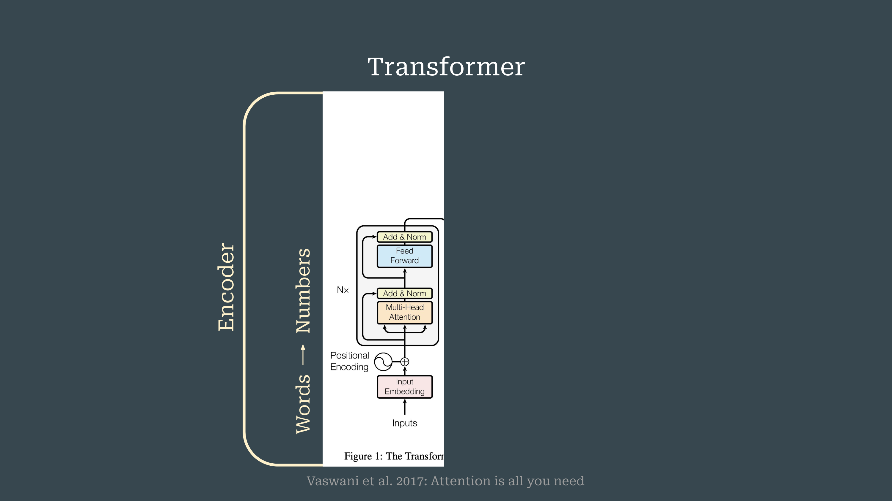

3 Large Language Models for the History, Philosophy, and Sociology of Science
Overview
This chapter details the foundational architecture of Transformer-based Large Language Models (LLMs) and their specialised adaptation for research in the History, Philosophy, and Sociology of Science (HPSS). The authors begin by deconstructing the Transformer model into its core encoder and decoder components. They elucidate the process flow from input words to numerical representations through embedding, positional encoding, multi-head attention, and feed-forward networks.
The analysis then demonstrates how this core architecture gives rise to distinct model families. BERT, for instance, leverages the encoder for bidirectional language understanding, whilst GPT employs the decoder for unidirectional text generation. For application within the HPSS domain, the authors outline several adaptation strategies. These include four distinct training-based methods for domain and task specialisation, alongside the increasingly prevalent Retrieval Augmented Generation (RAG) technique, which combines external document retrieval with text generation.
Furthermore, the presentation provides a taxonomy for classifying LLMs based on their architecture, fine-tuning methods, embedding types, and deployment abstraction levels. Finally, the authors map these computational methods to specific applications in HPSS, covering tasks related to data and source management, the analysis of knowledge structures, the investigation of knowledge dynamics, and the examination of knowledge practices.
3.1 Presentation Agenda

The presentation commences by outlining its structure, framed metaphorically as ‘Today’s Menu’. This agenda introduces the audience to the main topics and the logical progression of the discussion, thereby setting clear expectations for the content to be covered.
3.2 The Transformer Architecture

At the centre of modern large language models lies the Transformer architecture, which operates on a sophisticated encoder-decoder structure. This design governs the flow of information, systematically converting a sequence of input words into a set of output probabilities. An accompanying architectural diagram visualises this entire process, clarifying the pathway from initial input to final predictive output and illustrating the model’s core mechanics.
3.3 The Encoder Component

The encoder component of the Transformer architecture performs the critical function of converting input words into rich, context-aware numerical representations. This conversion unfolds through a multi-stage process. Initially, an embedding layer maps each word to a vector. Subsequently, the authors integrate positional encoding to provide the model with crucial information about the sequence and order of the words.
The resulting vectors are then processed by a multi-head attention mechanism, which dynamically weighs the significance of different words in relation to one another. Finally, these refined representations pass through feed-forward networks, completing their transformation into a format suitable for downstream tasks.
3.4 Specialised Architectures: BERT and GPT

Engineers have adapted the foundational Transformer architecture to create specialised models tailored for distinct tasks, giving rise to two prominent model families: BERT and GPT. BERT, which stands for Bidirectional Encoder Representations from Transformers, leverages the encoder stack to develop a deep, bidirectional understanding of language context. In contrast, GPT, or Generative Pre-trained Transformer, primarily employs the decoder stack to excel at unidirectional, generative tasks such as text creation. Both of these architectural specialisations have found significant application within the HPSS domain, enabling new forms of computational analysis.
3.5 Divergent Processing Capabilities

The distinct architectural choices in BERT and GPT result in fundamentally different processing capabilities, even though both originate from the same core Transformer model. BERT’s reliance on the encoder allows it to analyse entire sequences at once, making it exceptionally proficient at tasks requiring nuanced language understanding. Conversely, GPT’s decoder-focused design enables it to generate coherent and contextually relevant text in a sequential, unidirectional manner. This clear division of capabilities—understanding versus generation—dictates their respective applications and strengths.
3.6 Unanalysed Slide Content

The information corresponding to this segment of the presentation was not available for extraction. An analysis of the source slide content could not be completed; consequently, no factual details can be reported for this section.
3.7 Adaptation Through Training

To harness the power of Large Language Models for specialised fields, researchers must adapt them for specific domains and tasks. For applications within the History, Philosophy, and Sociology of Science (HPSS), the authors present four distinct strategies centred on model training. These methods allow for the fine-tuning of a general-purpose LLM, imbuing it with the specific knowledge and capabilities required for scholarly inquiry in the HPSS domain.
3.8 Adaptation via Retrieval Augmented Generation

Beyond direct training, Retrieval Augmented Generation (RAG) offers a powerful alternative for domain and task adaptation. This technique enhances an LLM’s capabilities by integrating an external knowledge source. The RAG process operates through a two-stage mechanism: first, a retrieval component searches a corpus of documents to find information relevant to a given query. Subsequently, a text generation component uses this retrieved information as context to produce a more accurate, detailed, and factually grounded response.
3.9 A Taxonomy of Large Language Models

The field of large language models can be systematically organised using a taxonomy based on four key characteristics. This classification framework helps to distinguish models by their underlying architecture, such as whether they are encoder-only, decoder-only, or a combination of both. Moreover, models are differentiated by the fine-tuning strategies applied to them and the specific types of embeddings they utilise. Finally, the level of abstraction in their deployment—ranging from simple API access to a fully self-hosted model—provides another critical axis for categorisation.
3.10 Computational Methods in HPSS

Computational methods, especially Large Language Models, provide powerful tools for research within the History, Philosophy, and Sociology of Science. Their applications are diverse and can be organised into four primary areas of scholarly work. Firstly, they assist in managing and processing data and sources. Secondly, these models enable the analysis of complex knowledge structures within large corpora. Thirdly, researchers use them to investigate knowledge dynamics, such as how concepts and theories evolve over time. Finally, LLMs facilitate the examination of knowledge practices by analysing patterns in scientific communication and argumentation.